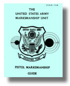

This section of the website is dedicated to the Army Marksmanship Unit's Pistol Training Guide. Quite simply, this is the "Bible" of Bullseye Pistol Shooting. No one serious about the game of shooting should miss the information in this booklet.Use the green buttons to the right to navigate through this massive treasure of information.